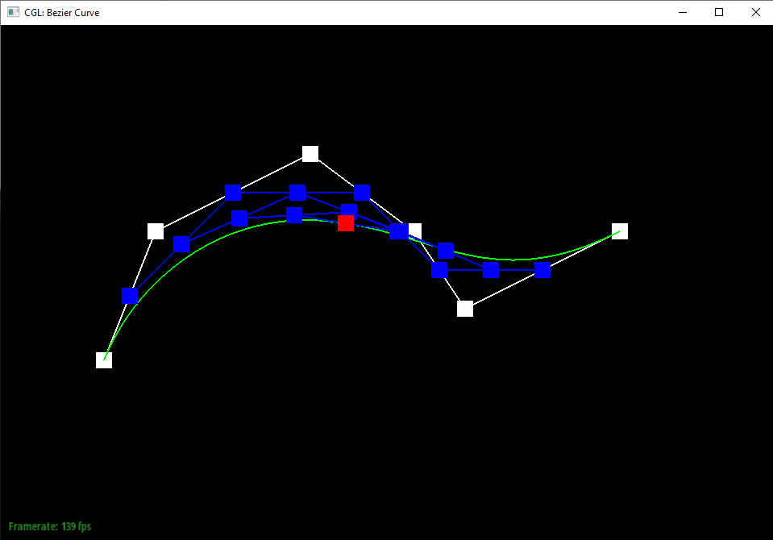
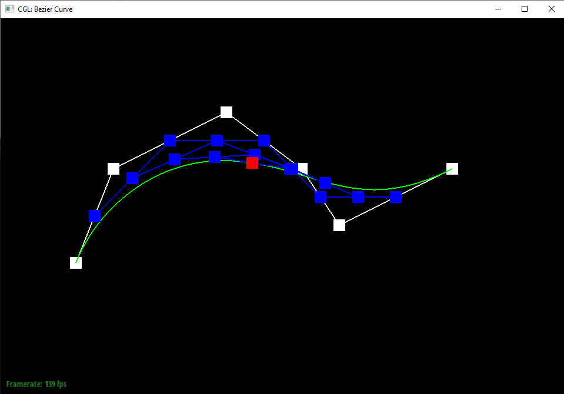

Overview:
Task 1:
The De Casteljau algorithm linearly interpolates the points between the points given as input to the algorithm. It continually repeats this process on the newly created
points. Once down to the final point, the algorithm has defined a point on the Bezier curve. I implemented the algorithm by multiplying the coordinates of the first of the pair
of coordinates by 1 - t and adding it to the coordinates of the second point multiplied by t.


 


Task 2:
Essentially, Bezier points along one axis can be grouped together along the other axis and linearly interpolated using the same algorithm to get points that
lie on the Bezier curves of both axes, providing a curve for the entire surface.

Task 3:
The area weighted vertex normals was calculated by taking the cross product of two of the edges in each of the attached faces of the vertex and summing them up.
The cross product provides the normal vector, and since we're using the edges of the triangle, their lengths are being accounted for in the cross product effectively
weighting the normals by the areas of the triangles.
Flat shading
Phong shading
Task 4:
At a very high level, implementing the edge flip involved methodically going through every element in the two triangles (vertices, faces, edges) and updating
their pointers in order for it to match the expected flip. I didn't do anything particularly special other than following the provided step order. The only thing
that wasn't just correct pointer assignment that I did was storing a reference to two particular halfedges that would be needed in a later pointer assignment but would
be lost while doing pointer assignments before reaching that point. The check_for() function was also very useful, as it helped when I ran into a weird bug where my
program was infinitely stalling, which threw me off since there shouldn't have been any loops in the program. What I found out was that I was assigning two halfedges'
next elements to each other on accident because I set them to a sequence of halfedge->next()->next() pointers expecting them to represent certain halfedges. However,
I didn't realize that I was changing halfedge->next()->next() earlier, so they ended up representing halfedges different than what I intended.
Preflip teapot:
Postflips teapot:
Task 5:
This task was almost identical to the previous task except with slightly more bookkeeping because of the need to create new elements. My implementation basically boils
down to going through every element and changing them to match with the expected outcome. I followed the image of the split triangle provided in the spec from the new vertex
m and just traced through it in my head dozens of times while doing the pointer assignments to get the right element assignments. Debugging was the same was for task 4, but
I didn't make any major errors in my first implementation so debugging was simpler. The only issue I had was splitting would result in correctly appearing edges, but the face
would disappear. It ended up just being a copy and paste of a previous halfedge assignment that I forgot to change properly.
Extra Credit:
For extra credit, I also implemented support for splitting on boundary edges. My implementation was very simple; if the input edge's halfedge was a boundary edge,
I ignored changing or adding any element that would lie in halfedge's triangle (which would lie in the boundary) and vice versa for if halfedge's twin was a boundary edge.
In practice though, halfedge ended up never being a boundary edge in any of my tests. I could kind of reason why this makes sense in my head, but just in case I kept the
case for halfedge being a boundary edge in.
Presplits teapot:

Postsplits teapot:

Presplits and flips cow:
Postsplits and flips cowt:

Extra Credit: Presplits and flips beetle boundary:
Extra Credit: Postsplits and flips beetle boundary: